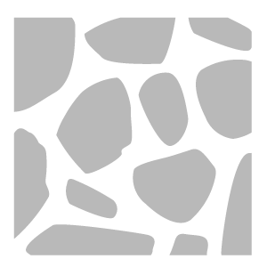
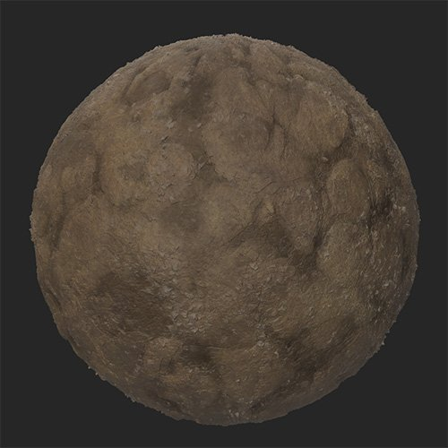
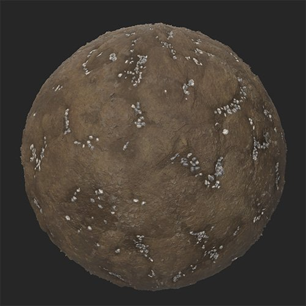

In: Generators
The Gravel filter layers gravel on top of your material in a natural way, filling crevasses.
These images show the Gravel filter being used to fill the crevasses of a mud material with gravel.


Basic parameters
Advanced parameters